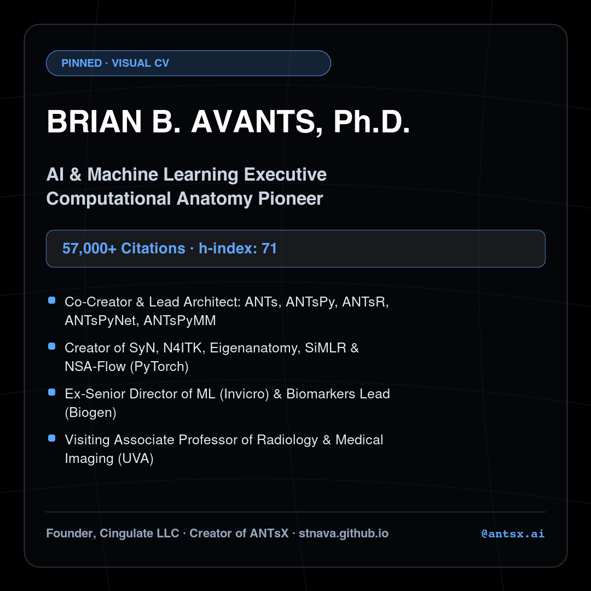
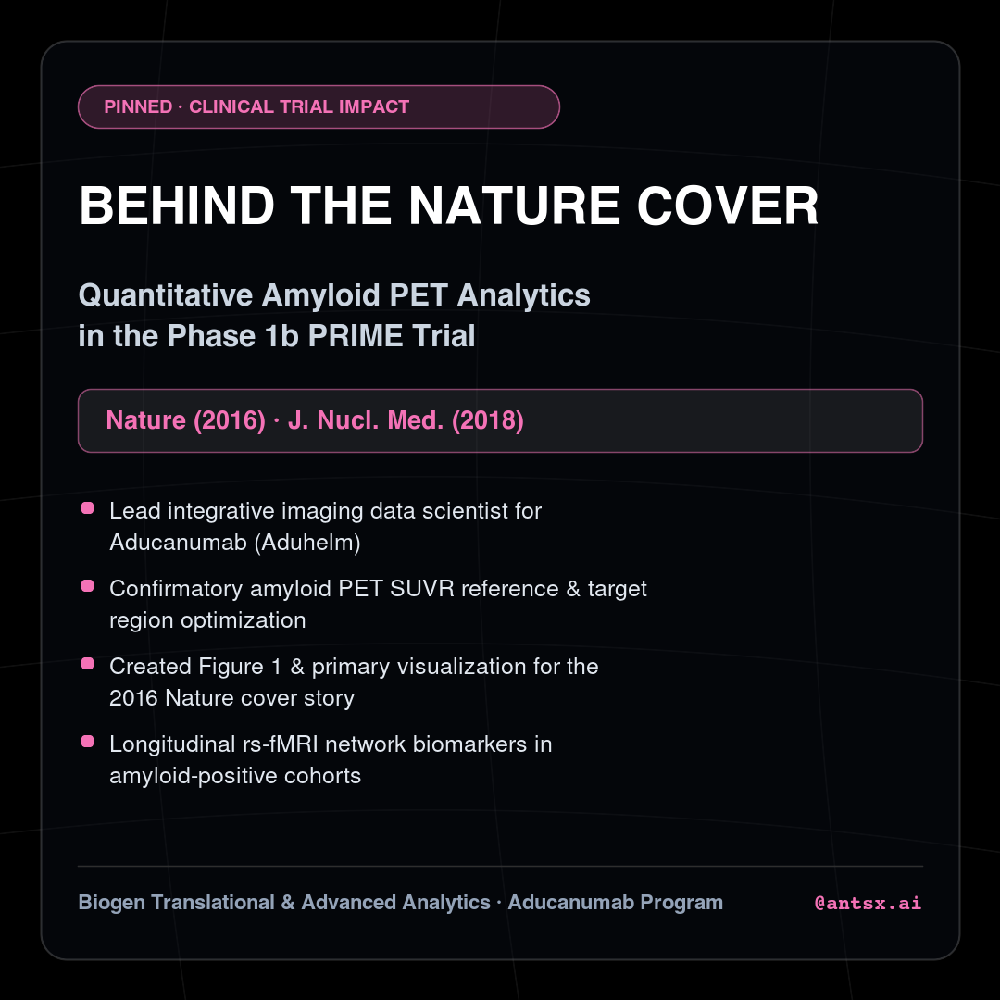
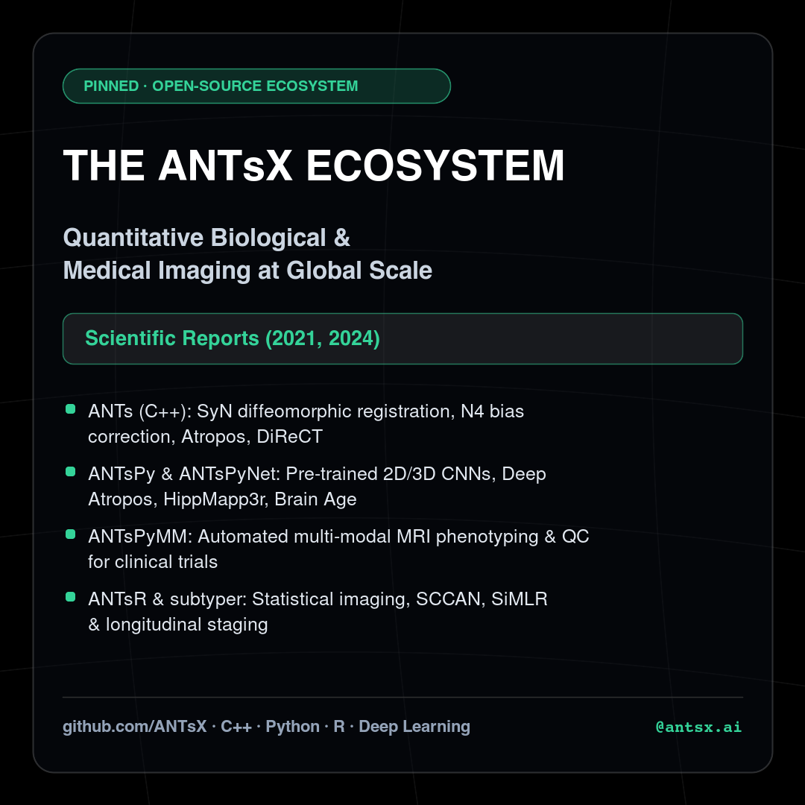
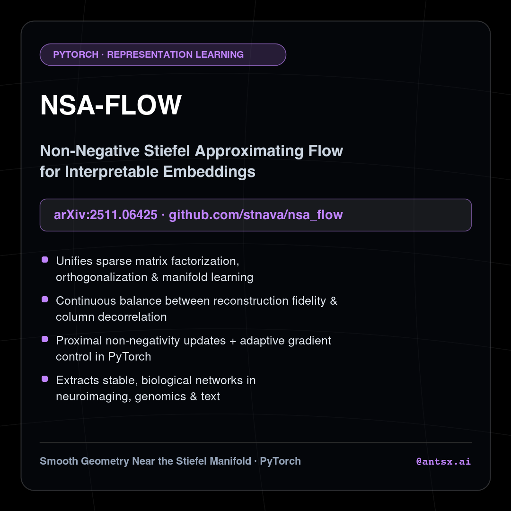
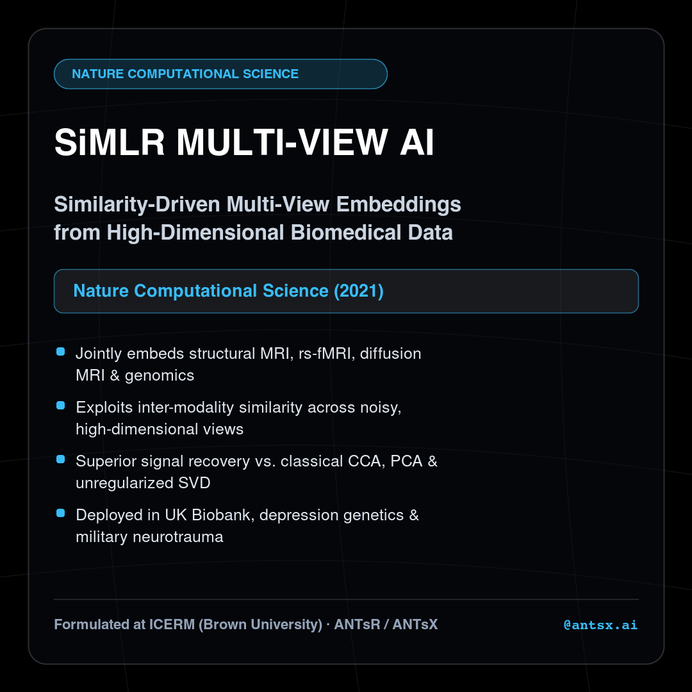
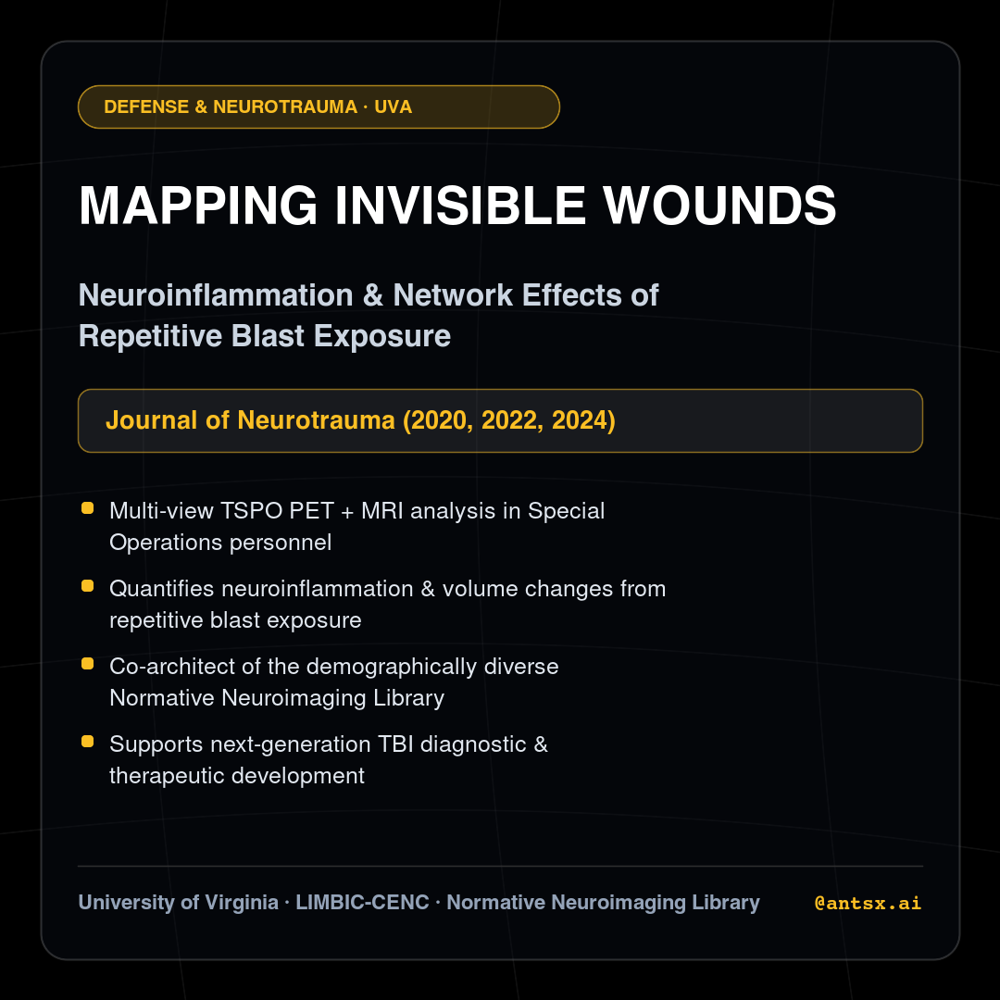
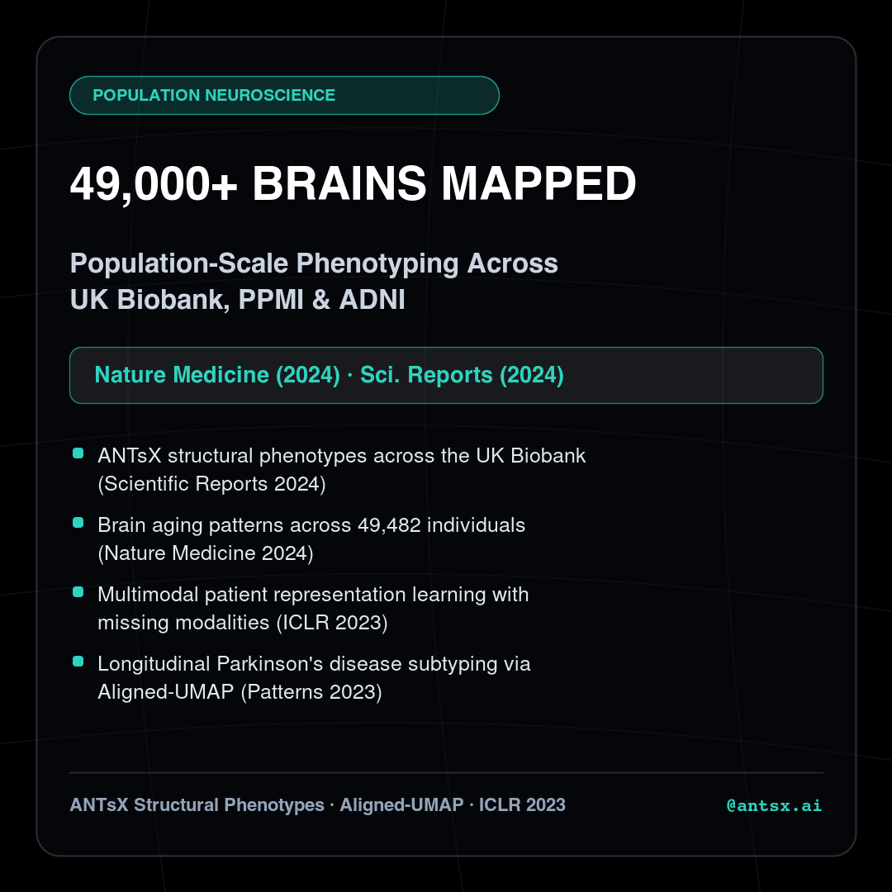
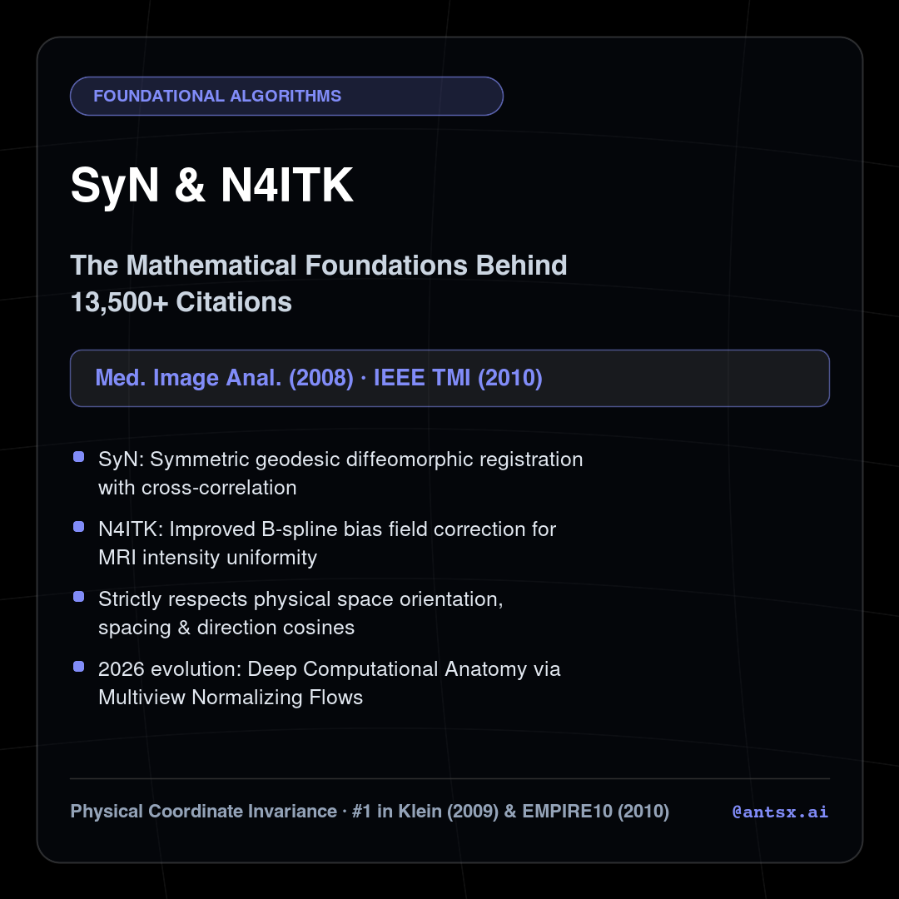
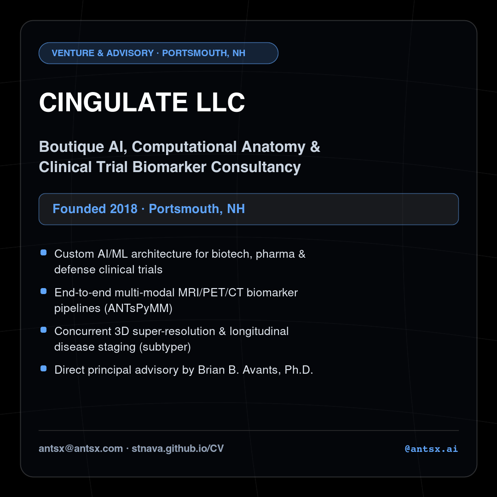

Select any handle below to test how it looks in the live Instagram mobile mockup on the right.
antsx@antsx.com) and global ANTsX brand while signaling modern AI/ML leadership.github.com/stnava) and web domain (stnava.github.io).Instagram bios have a strict 150-character limit. Click any bio below to preview it on the mockup.









Meta requires the initial account creation to be done once in the Instagram app (due to SMS/CAPTCHA verification), after which switching to a free Creator or Business account unlocks 100% automated publishing via the official Instagram Graph API.
# 1. Re-generate all 1080x1080 PNG slides & parse avantsCV.bib for new papers: python3 instagram/generate_posts.py instagram/posts # 2. Preview API payloads in dry-run mode: python3 instagram/publish_instagram.py --post-id post_01_visual_cv --dry-run # 3. Publish live to Instagram (or run automatically via .github/workflows/instagram_publish.yml): export IG_USER_ID="YOUR_IG_BUSINESS_OR_CREATOR_ID" export IG_ACCESS_TOKEN="YOUR_META_GRAPH_TOKEN" python3 instagram/publish_instagram.py --post-id post_01_visual_cv
All 9 high-resolution 1080×1080 PNG cards below are already generated in instagram/posts/.